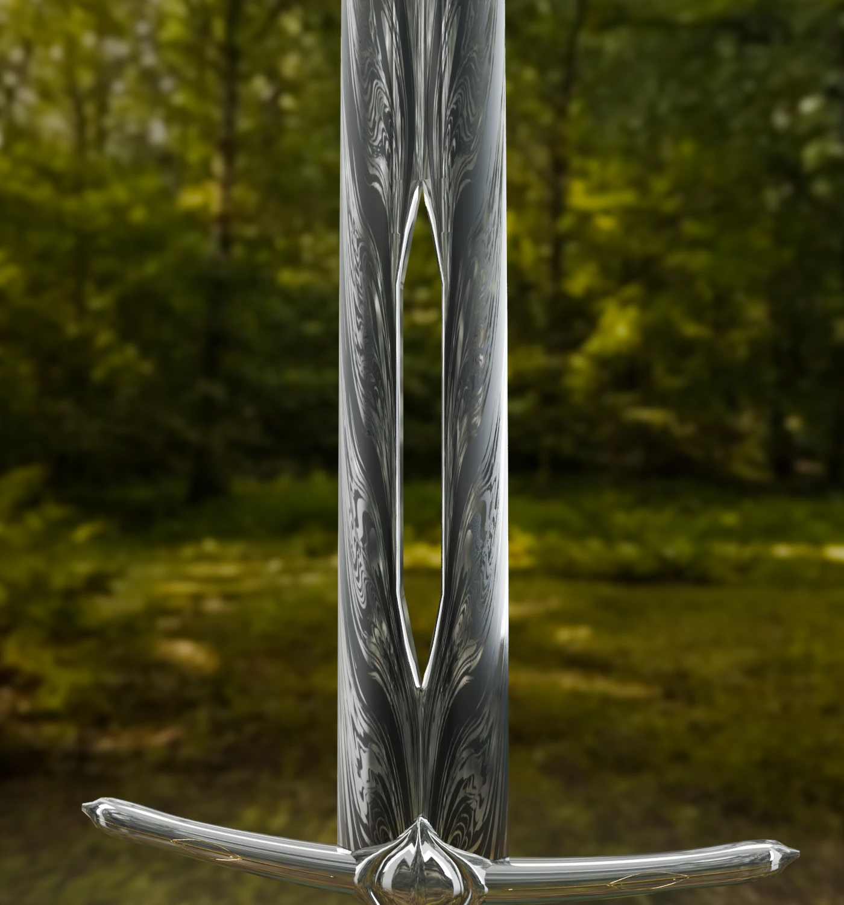
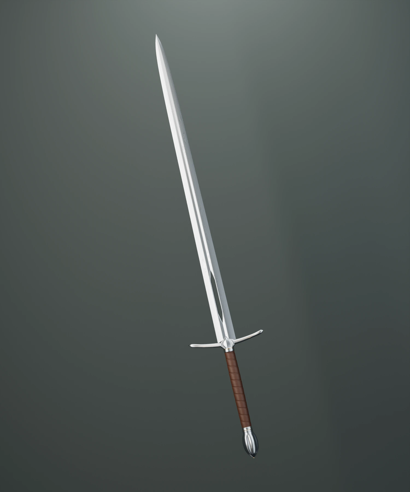
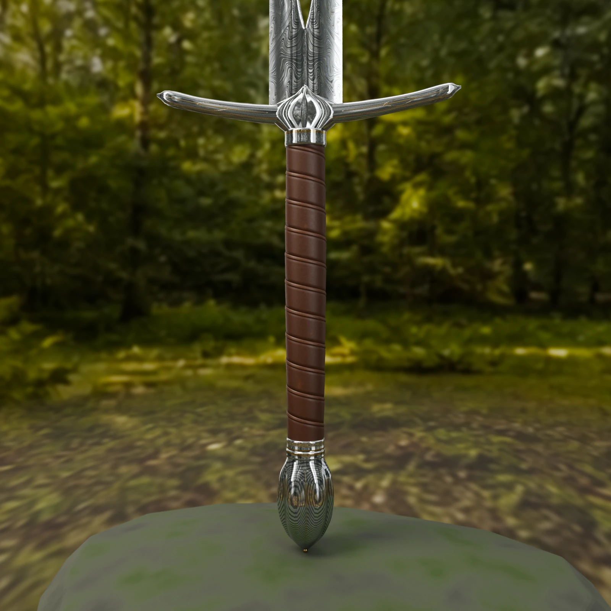
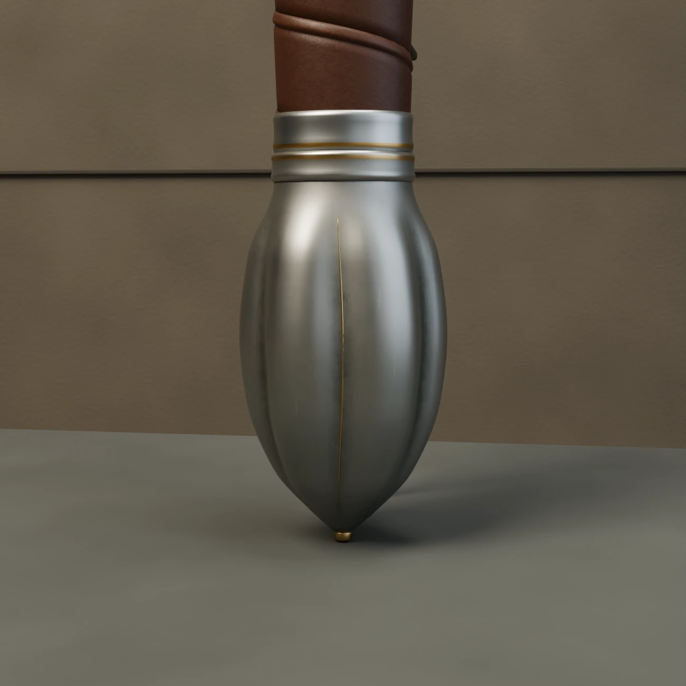

01
光里的钢层
花纹来自不同钢材锻焊后的内部层次。研磨与酸洗让它显露在平整刃面上。转动时，细微的色泽与反射差随光浮现。
Pattern-welded steel · Atelier II
修长的双刃围合一线镂空。光掠过平整的钢面，锻焊层纹随角度隐现；枝叶在护手处舒展，收于深棕皮革与芽苞形剑首。
工艺修订版 02
BRANCH · II

当前显示静态展示图
拖动旋转 · 双指缩放
01 / CRAFT & FORM
从刃尖向下看，钢的层次逐渐靠拢、舒展，再交给护手的植物形轮廓与握柄细密的缠绕。

花纹来自不同钢材锻焊后的内部层次。研磨与酸洗让它显露在平整刃面上。转动时，细微的色泽与反射差随光浮现。

中央的修长六边形镂空沿剑身伸展，内壁与孔缘保留钢的厚度。护手从中心向两侧舒展，叶脉与边缘呼应这条轮廓。

深棕皮革顺着握柄的鼓度缠合，接缝、收边与细纹近看可辨。金属端箍衔接护手与芽苞形剑首，收住皮革的两端。